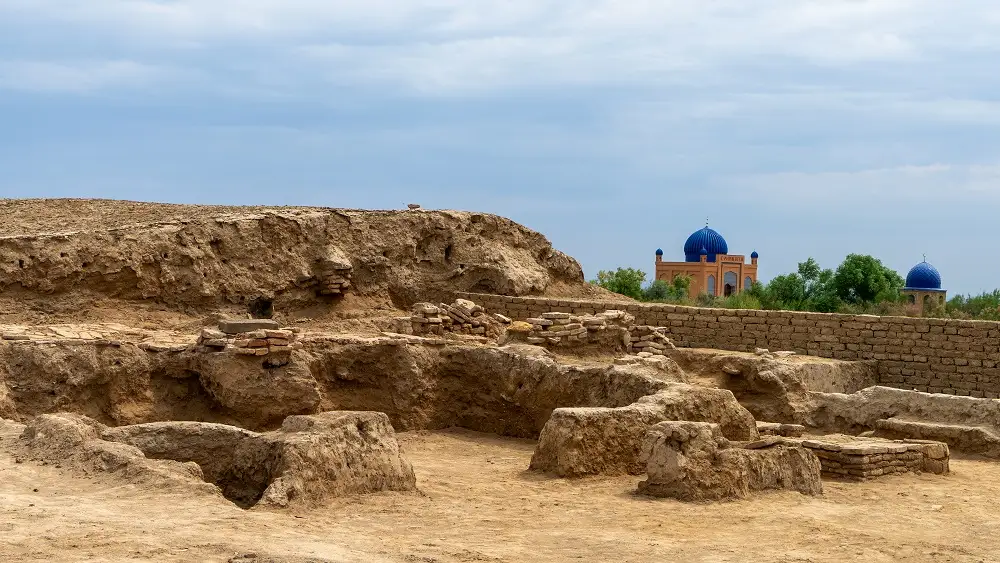

СЕНІҢ ЖҰМЫС КЕҢІСТІГІҢ
Картадан бастау ↗Зерттеуді жалғастырайық.
Тарихи орынды таңда, дәлел жина, өз оқиғаңды дайында.
20+Зерттеу карточкасы
↗0 / 30Орындалған тапсырма
↗0Сақталған репортаж
↗0Дәптердегі жазба
↗ОСЫ ЖОЛҒЫ ЗЕРТТЕУ
Сығанақ: қала орнынан тарихи дәлелге
Сақталған ізді байқап, суреттің мүмкіндігі мен шегін түсін. Өз тұжырымыңды дерекпен раста.
Карточканы ашу →
Зерттеу барысы
0%
30 тапсырмадан өткенің осы жерде көрінеді.
Тапсырмаларға өту →